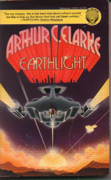

Earthlightby Arthur C. Clarke
publisher: Del Rey
Fiction, 155 pages | 
(book cover art, Copyright ©1955 Stanislaw Fernandes)
Used with Permission. |
Return to the Book MenuPrevious|Next
Description:
This is the story of an adventure at the lunar colony. As tensions increase between Earth and its colonies, the Federation of Mars and Venus, it quickly becomes apparent that war is brewing...and the moon is where the most decisive battle will take place.
Recommended for: explorers, revolutionaries, detective & mystery buffs
Did-you-read questions:
Deadline: February 1, 2005.
These should be easy questions, but you should have the questions ready and keep an eye out during your reading. Each question should be answered with 1-2 sentences.
Note: these questions are not probably not the most important part of the book! Your essay will not have to cover these questions!
- What was the title of the paper by Roland Phillips?
- What is Sadler really looking for on the moon?
- Who is caught during the siege of the Observatory, thanks to Sadler?
- What does Jamieson accidentally drive into?
- What was the color of the message sent from the moon?
Report Questions:Deadline: Peer Review Session on February 8, 2005; paper due February 10, 2005.
You should write a 3 - 4 page essay on one of the following questions. Your essay should include examples and references to the book, unless otherwise specified. Page number references are sufficient for citing material from the primary book. If you use outside materials, cite your sources in full. If you would rather write on a different topic, you may, but clear it with Mr. Howe or Ms. Sullivan first.
- This book was originally written in 1955. Other than dates, is this still a modern story? Does it feel dated? Are there technologies described that are already obsolete? Or does the science still seem valid?
- At one level, this is a mystery story -- does it have a satisfying ending? Is it adequately explained, and do you feel (in retrospect) that there were enough clues to make the answer seem fair?
- There are many scientific ideas here -- telescopes, lunar cycles, project Thor, lunar dust bowls, centrifuges and the like -- were they distracting, or do they fit well into an engaging story? Give examples from the book.
- Do you think that the political situation described in the story was plausible? Give examples to support your opinion.
Graphic and Presentation:
Deadline: February 21 - March 3, 2005.You will give a 10 minute presentation on both of the following:
- Convince your peers that they should (or should not) read this book. (This may include a brief summary of the book.) Give examples of what was cool or worthwhile in the book, and what you got out of it (or didn't).
- Describe a (realistic) science idea that you learned about in this book, citing information from at least 2 external sources (other than the dictionary). If you would like help choosing or understanding an idea from your book, you are invited to come talk to Mr. Howe or Ms. Sullivan.
Note: This presentation should not be just a reading of your paper!Along with this presentation, you should have a graphic that will go with it. A Power Point presentation is recommended, but if you have a special idea for a something else, such as a model, an original video presentation, or a well done drawing/ painting/ sculpture/ etc., you may do so, provided it involves a similar level of effort and polish. Speak to Mr. Howe or Ms. Sullivan first if you are considering an alternate graphic format to the Power Point.
Return to the Book MenuPrevious|Next